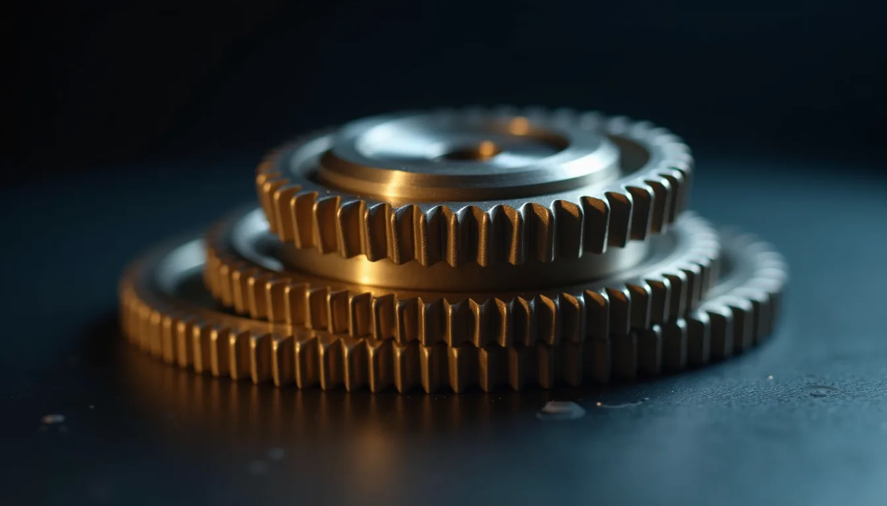
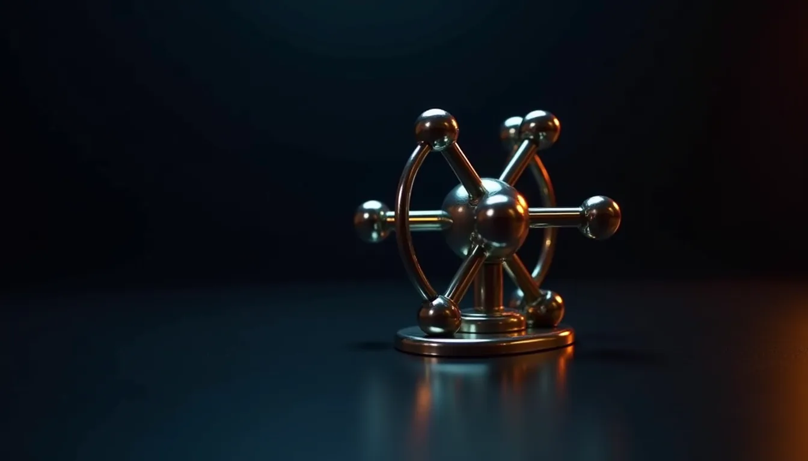
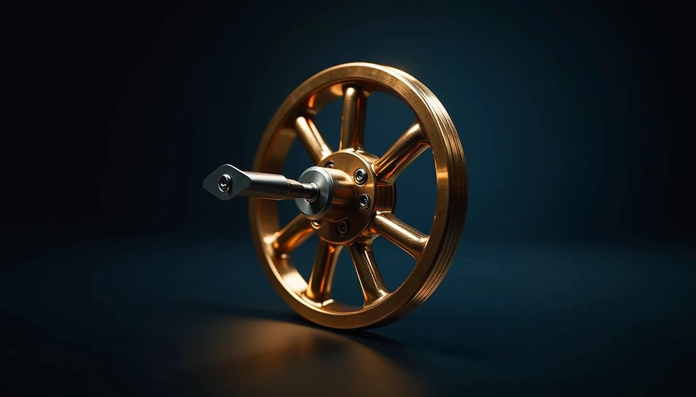
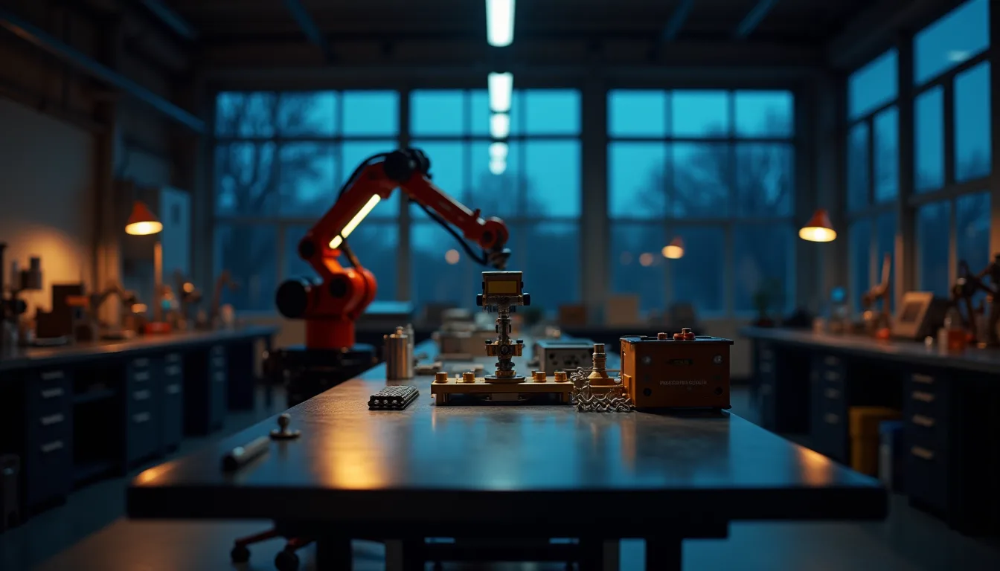
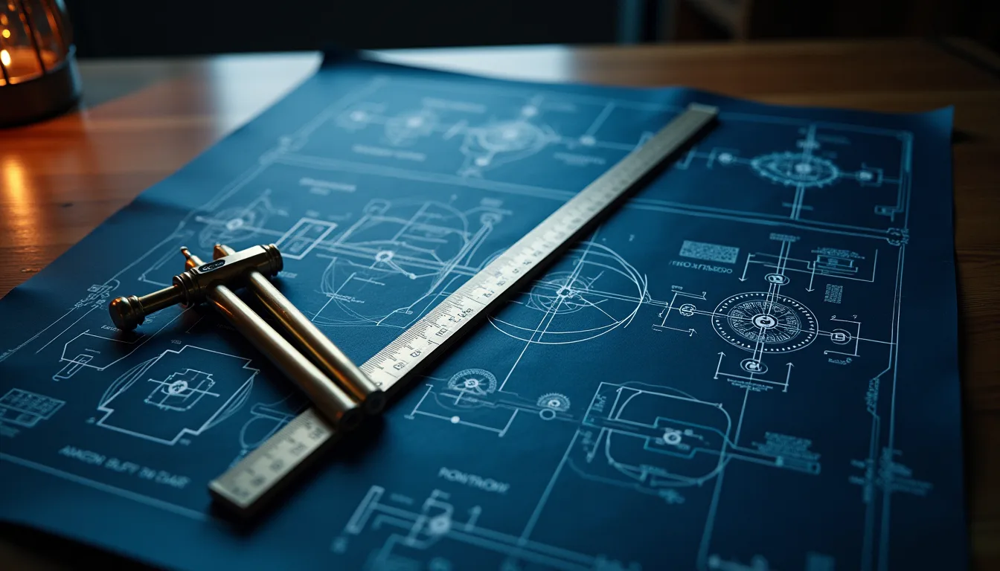
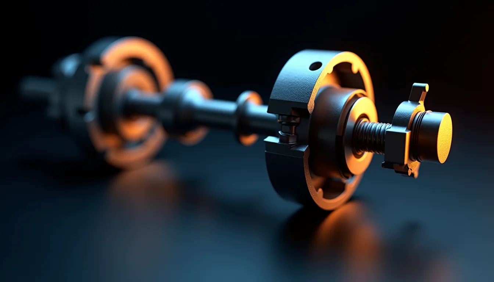

01
Зъбни колела
Зъбните колела предават движение между валове и променят скоростта и въртящия момент. В лабораторията сами задавате броя на зъбите и гледате какво се случва.
Факултет по индустриални технологии · ТУ–София
Катедра „Теория на механизмите и машините“ обучава студентите в механичната същност на машините и развива инженерна култура и изобретателско мислене.
Видео и изображения: генерирани с изкуствен интелект
Пет основни идеи на дисциплината. Превъртете и гледайте как се променя сцената.
01
Зъбните колела предават движение между валове и променят скоростта и въртящия момент. В лабораторията сами задавате броя на зъбите и гледате какво се случва.
02
Звена, свързани с шарнири, превръщат едно движение в друго. Четиризвенникът е „азбуката“ на дисциплината — влачете манивелата и гледайте траекторията.
03
Профилът на гърбицата решава кога и колко се отваря клапанът. Изберете закон на движение и вижте как се променя преместването.
04
Слънчево колело, сателити и венец: компактно предаване на движение, което се среща в редуктори и скоростни кутии.
05
Превръща равномерното въртене в движение на скокове — кадър по кадър, както в кинопроектора.





Преместете плъзгачите: променя се предавателното отношение, изходните обороти и въртящият момент. Още четири инструмента има в лабораторията.
Анимацията е забавена; числата са за зададените обороти. Идеален случай, без загуби. Паразитното колело сменя само посоката.
Влачете галерията. Всички изображения са генерирани с изкуствен интелект и не изобразяват реални обекти на университета.




Блок 4, ет. 5, каб. 4536
02 965 2770 · nickn@tu-sofia.bg

Корените на дисциплината са от 1945 г. През юни 1974 г. катедрата става самостоятелна. Основател е проф. Михаил Константинов (1921–1991). Към историята →
Наука за движението на механизмите и машините: как се свързват звената, за да превърнат едно движение в друго, и как инженерите проектират такива системи.
Катедрата води 10 задължителни дисциплини, две от които в магистърски програми, и предлага две избираеми. Тематичните области са структура и кинематика, сили и динамика, проектиране и синтез, приложение и магистърска специализация. Конкретните дисциплини са посочени в учебните планове.
Навсякъде, където нещо се движи по зададен закон: роботика, машиностроене, автоматизация, мехатроника, проектиране на двигатели, предавки и производствени линии.